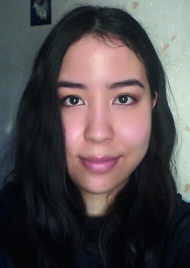
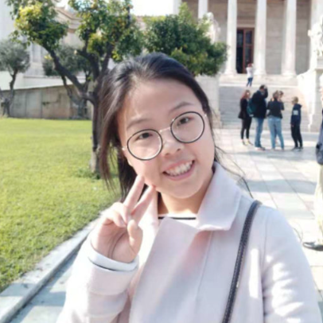
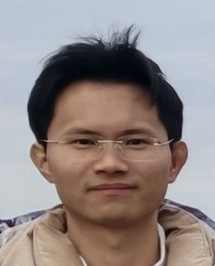
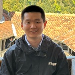

Principal Investigator
Assoc. Prof. Chao XuAlumni
Dr. Shengyang Zhou (PhD 2018–2021, PI @ Sichuan University)Dr. Xueying Kong (PhD 2020–2024, Postdoc @ Uppsala University)
Dr. Kasper Eliasson (PhD 2021–2025)
Dr. Samson Afewerki (Researcher 2024–2025, PI @ UAE University)
Yu Pan (Visiting PhD 2023–2024)
Shan Jiang (Visiting PhD 2023–2024)
Simanjit Singh (MSc 2022)
Beyar Abdulla (MSc 2020)
Viktor Sanderyd (MSc 2018)